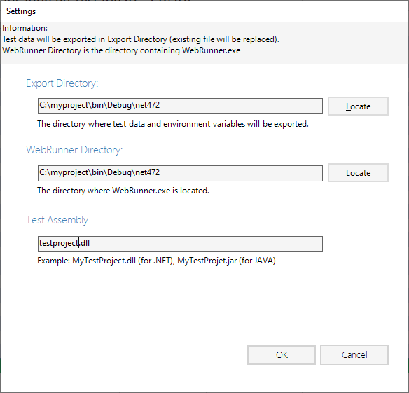

Settings
Settings dialog
Before launching tests from WebEngine Add-in for Excel, you should configurate the add-in and your test automation solution.

Parameters
The settings, as shown as above, have 3 parameters:
Export Directory: This parameter indicates the path of Test Data and Environment Variables.WebRunner Directory: This parameter indicates the path of your test automation solution and the WebRunner.Test Assembly: The file name of your compiled test automation solution. Usually it's a DLL file (for .NET) and JAR file (for JAVA).
Note
WebEngine Add-in for Excel automatically detects the version of the Framework used.
For TAS (Test Automation Solution) built with .NET, it will launch WebRunner.exe. For
TAS built with Java, it will launch WebRunner.jar.
The settings will be saved for next use. If you are working with another TAS, you'll need to change these settings.